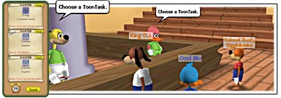

|
 |
| As you learned in section six, ToonTasks are the quests you are sent on to help save Toontown from the Cogs - they’re also the key to becoming a seriously powerful Toon! |
|
All Toons start their ToonTasks in Toontown Central. That’s a good thing, because some neighborhoods have pretty tough Cogs walking the streets, and Toon HQ doesn’t want to send you there until you’ve got the gags and the Laff points to handle them. |
| Here is a tip for life: Always get three estimates. Shopping for ToonTasks is no different -- each HQ Officer and Shopkeeper will have different tasks for you to choose from, often for the same reward. One Officer may ask you to defeat 12 Corporate Raiders for a two-point Laff boost and the next Officer might offer you that same two-point Laff boost for 10 Bossbots. You can choose which task is right for you! |
|  |